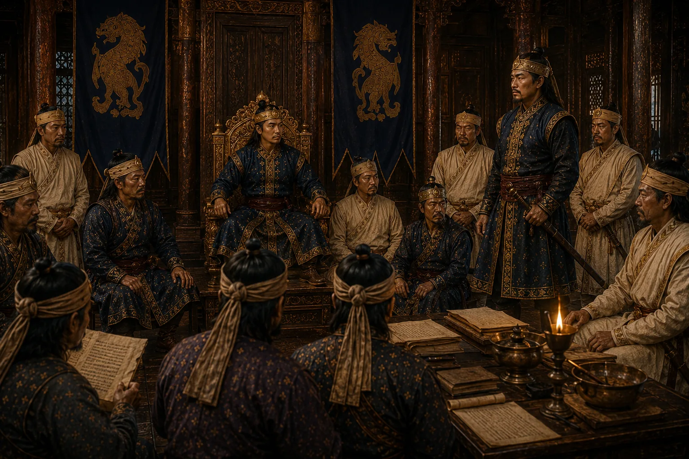

Accession and Court of Sudoiphaa Paratiya Raja
1677 · Six kings in nine years

Paratiya prince ascends the throne; kingdom faces external intrigue from Lower Assam viceroy Laluk Sola Borphukan.
Sources have not yet been catalogued for this record.
People: Atan Burhagohain, Sudoiphaa (Parvatia Roja)
Open this scene in the interactive archive · Follow this event on MAP